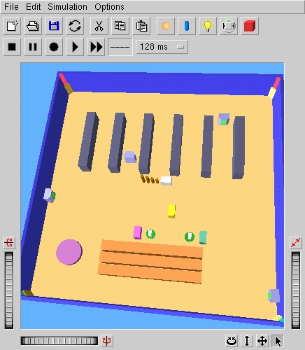
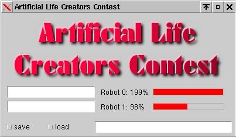
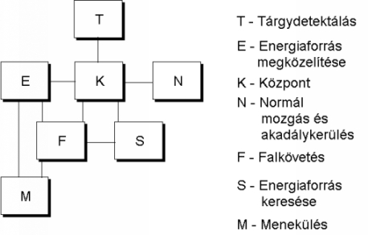
simil = propRGB(red,green,blue,goal);
diff = min(100,fabs(red - green) + fabs(red - blue) +
fabs(green - blue));
margin = TOLERANCE * ((2 - diff/100) + simil);
resp = (fabs(red - goal[0])< margin) &&
(fabs(green - goal[1])< margin) &&
(fabs(blue - goal[2])< margin);
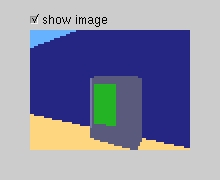 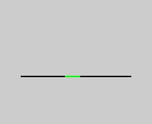
start_pos kezdeti kerékszámláló-érték, a
FULL_TURN elõre meghatározott konstans
if((side == LEFT && (my_khepera_get_position(LEFT) >
start_pos - FULL_TURN) ||
side == RIGHT && (my_khepera_get_position(LEFT) <
start_pos + FULL_TURN)) &&
(left_food_stimuli + right_food_stimuli == 0)) {
return true;
} else {
return false;
}
main() {
// inicializálás, képnagyság-távolság tábla tárgyankénti
// feltöltése
CalculateOneStep() {
GetStepData() {
CreateFilteredImages() {
// energiaforrás, ég, föld színének érzékelése
// másik Khepera kiszûrése az energiaforrás színébõl
// több energiaforrás szétválasztása
// közelebbi forrás meghatározása magasság alapján
LookUpDistance(); // forrás távolságának meghatározása
// az eddigi eljárás megismétlése a még nem
// érintett színekre
// töltõdõ energiaforrás meghatározása és
// közelében maradás, ha szükséges
// távolmaradás kevés földpixelt és/vagy sok
// falat tartalmazó oldaltól
IdentifyImmediateLandmarks(); // képen látható
// tereptárgyak azonosítása
// ha nincs használható energiaforrás és régóta nem
// volt a robot egy tereptárgynál, akkor az az új cél
}
}
SetGoalAndthePresentLandmark() // cél kiválasztása
// hangulat alapján
UpdateLandmarkDistanceRelationships() // tereptárgyak
// egymáshoz viszonyított távolságának eltárolása
RunAMood {
// egy viselkedés kiválasztása és futtatása
}
}
}
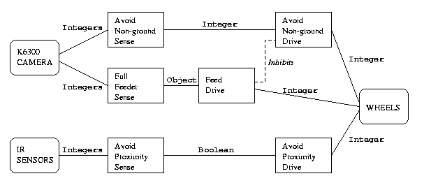
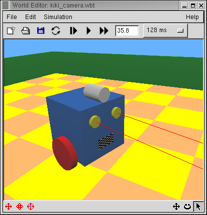
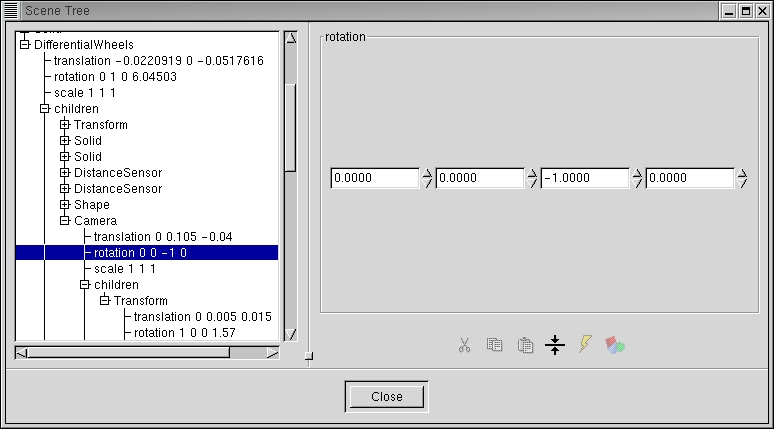
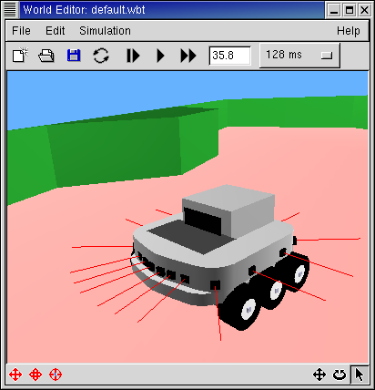
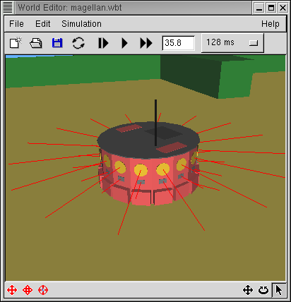
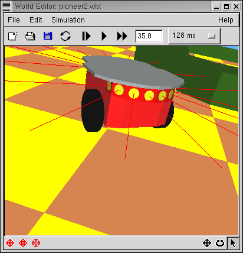
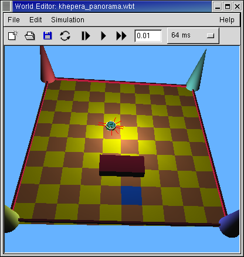 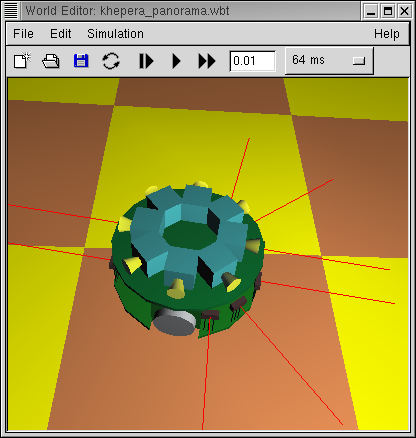 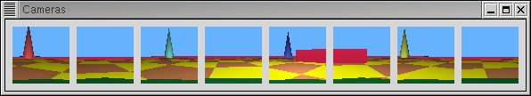
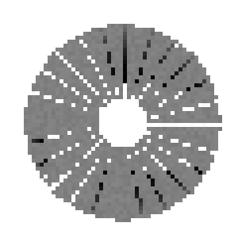 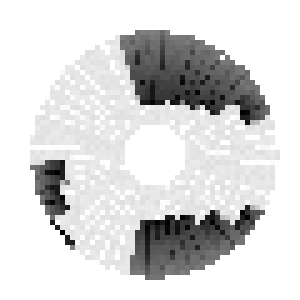
| szisztematikus | véletlen | nem egyforma méretû kerekek | egyenetlen padló |
| szabálytalan kerekek | kerekek csúszása |
| mintavételezés ritkasága | ütközések |
| mintavételezés precízitása |